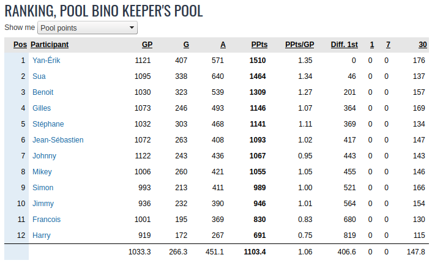

Masse Salariale
La masse salariale est de 102M US pour l'alignement partant 2025-2026; Après la remise de l'alignement, la masse salariale passera à 110 M.
Tous les joueurs de l'équipe comptent sur la masse salariale, sauf les joueurs dans le backstore.
On compte le plein salaire du joueur et non son "cap hit". Pour les salaires, on prend les chiffres officiels du site PuckPedia.
Pour les joueurs qui sont à leur premier contrat(ELC), un joueur doit avoir joué 10 matchs durant l'année courante pour que son salaire soit comptabilisé sur la masse salariale, sinon on comptabilise 500k$ sur la masse.
Si un pooler dépasse la masse salariale durant la saison ou s'il repêche plus de joueurs que la limite permise (30), il doit jeter un joueur au vidange pour respecter la masse salariale et en plus, il reçoit la première sanction qui s'applique de la liste ci-dessous:
Si un pooler ne repêche pas assez de joueurs (moins de 30), il reste avec le nombre actuel et il n'y pas de pénalité additonnelle.
On compte les 9 meilleurs avants, les 4 meilleurs défenseurs et 2 gardiens; donc vous devez avoir au moins 15 joueurs qui jouent dans la LNH (9A, 4D, 2G). Vous DEVEZ respecter cet alignement minimum (9A,4D,2G) à la remise de l'alignement en début de saison et à la fin de la période de repêchage du ballotage vers la fin de saison.
Pour tous joueurs: 1 but = 2 points, 1 passe = 1 point.
Pour les gardiens: 1 victoire = 2 points, 1 blanchissage = 3 points, défaite en prolongation ou fusillade = 1 points.
Quand on échange un joueur, les points accumulés par le joueur suivent le joueur dans sa nouvelle équipe.
Liste de protection: 7 avants, 3 défenseurs, 1 gardien + 2 joueurs au choix + tous les joueurs ayant joué moins de 200 matchs.
La date limite pour remettre la Liste de protection 2025-2026 est le ?? octobre 2025.
À la fin du prochain repêchage, chaque équipe aura 30 joueurs et une RÉSERVE (backstore) de jusqu'à 8 joueurs qui ne seront pas comptabilisés NI sur la masse salariale NI pour les points. Par contre, on pourra échanger les joueurs dans le backstore. Toutefois, l'équipe qui recevra ce joueur devra le comptabiliser sur sa masse salariale à moins que ça implique une transaction de backstore à backstore. De plus, si on échange un joueur de la réserve, on ne pourra en introduire un nouveau sur cette liste de réserve.
La date limite pour la remise de l'alignement de debut de saison : dimanche, ?? octobre 2025; Vous devez avoir un alignement minimum de 9A,4D,2G qui jouent dans la LNH.
La date limite des transactions pour la saison 2025-2026 est le jeudi 08 janvier 2026, 22H.
Dans une transaction impliquant des joueurs dans le backstore, vouz pouvez mettre un joueur dans votre backstore SEULEMENT si un de vos joueurs va aussi dans le backstore de l'autre partenaire d'échange.
La date limite pour sortir un joueur du backstore pour la saison 2025-2026 est le jeudi 26 février 2026, 22H. Vouz pouvez sortir un maximum de 2 joueurs du backstore et vous devez mettre un joueur au ballotage pour chaque joueur qui sort du backstore.
On ne peut pas échanger des choix qui vont au delà de deux ans.
Lottery PICK: À la fin de la saison, les 5 derniers du classement poolbino seront jumelés respectivement aux 5 dernières équipes du classement final de la saison régulières de la LNH pour la lotterie du repêchage. Le gagnant de la loterie aura le privilège de repêcher au premier rang lors du prochain repêchage. SEUL le gagnant de la loterie peut changer de position au repêchage et pour la première ronde seulement.
Pour l'ordre du ballotage, on prend le classement du pool le ??? février 2026, le dernier au classement choisit en premier et on remonte jusqu'au premier.
Un joueur choisit est automatiquement inséré dans l'alignement et est compté sur la masse salariale.
Il peut y avoir plusieurs tours, en autant que les joueurs choisis respectent la masse salariale
À la fin du processus, les joueurs non choisis retournent dans leurs équipes respectives ( dans leurs back store).
A la fin du processus, chaque équipe doit respecter un alignement minimum de 9A,4D,2G qui jouent dans la LNH.
|
Date |
Pooler1 |
Pooler2 |
|
25-avr-2025 |
ATTENTION! Cette table n'est plus MAJ. Voir Page 2026-2027 |
ATTENTION! Cette table n'est plus MAJ. Voir Page 2025-2026 |
|
24-avr-2026 |
Johnny: A Tuch |
Sua: Choix 3e ronde 2026 de Yan-Erik |
|
24-avr-2026 |
Gilles: J Robertson, J Daccord |
Sua: A Fantili, I Sorokin, Choix 1ere ronde 2027 de Gilles & Benoit |
|
24-avr-2026 |
Harrry: J Eriksson-Ek |
Francois: J Neighbours |
|
24-avr-2026 |
Harrry: E Karlsson |
Sua: Choix de 3e ronde 2026, choix de 4e ronde 2027 |
|
24-avr-2026 |
Gilles: J Slavkovsky |
Ben: B Kindell, S Dickinson, Choix de 1ere ronde 2026 |
|
24-avr-2026 |
Yan-Erik: S Honzek, choix de 3e ronde de Stephane (32e) |
Harry: A Ovechkin, S Bobrovsky |
|
3-mar-2026 |
Gilles: Prend C Barlow du ballotage |
Stephane: Prend D Tarasov au ballotage |
|
26-fev-2026 |
Yan-Erik: C Barlow au ballotage, C Keller dans lineup |
Sua: B Rust au ballotage, J Gibson dans lineup. |
|
25-fev-2026 |
Yan-Erik: R Donato au ballotage, C Makar dans lineup |
Gilles: P Kane, M Macelli au ballotage, C Bear, J Luchanko dans lineup. |
|
8-jan-2026 |
Yan-Erik: N Kucherov, A Debrincat, J Chychrun, choix de 4e ronde 2027 |
Jimmy: L Cooley, W Smith, P Martone, L Hughes, A Sandin-Pellikka, J Kulich , M Beniers, choix de 2e ronde en 2026 |
|
8-jan-2026 |
Jeab-Seb: C Ingram, choix de 2e ronde 2026 de Johnny |
Sua: A Silovs |
|
8-jan-2026 |
Gilles: W Eklund, P Kane |
Sua: B Rust, B Burns |
|
8-jan-2026 |
Simon: W Nylander, M Hage, J Greaves, choix 1ere ronde 2027 |
Sua: J Robertson, A Giorgiev, choix de 4e ronde 2026, choix de 4e ronde 2027 |
|
7-jan-2026 |
Gilles: N Hischier, choix 1ere ronde 2027 |
Benoit: A Panarin |
|
7-jan-2026 |
Johnny: M Michkov, C Hutson, S Pinto, V Vanecek, choix 1ere ronde 2026 |
Benoit: S Crosby |
|
30-dec-2025 |
Gilles: B Montour, A Fantilli, S Dickinson |
Benoit: T Zegras, J Carlson |
|
21-dec-2025 |
Francois: F Nazar, O Moore, W Cuylle, D Holloway, T Konecny(bs), N Ehlers(bs) |
Sua: W Eklund, A Lundell, Choix 4e ronde 2026, S Durzi (bs), A Forsberg(ballot) |
|
17-dec-2025 |
Jean-Seb: R Thomas(bs), C Desnoyers, A Nikishin |
Yan-Erik: K Kaprizov, J Kulich(bs) |
|
17-dec-2025 |
Benoit: B Marchand, A Lehkonen, M Rielly, S Wedgewood |
Simon: A Hill, A Fox |
|
13-dec-2025 |
Mike: E Pettersen, choix 1ere ronde 2026 |
Yan-Erik: A Ovechkin, S Bobrovsky, choix de 3e ronde 2026 |
|
2-dec-2025 |
Johnny: Choix 4e ronde 2026 |
Harry: S Honzek |
|
29-nov-2025 |
Benoit: D Raddysh, choix de 4e ronde 2027 |
Harry: T Connelly, K Guhle, choix de 2e ronde 2027 |
|
23-nov-2025 |
Sua: J Doan, O Moore, P Kane |
Francois: I Howard, A Cristall |
|
18-nov-2025 |
Benoit: O Bonk |
Francois: T Meier |
|
15-nov-2025 |
Sua: D Pastrnak |
Mike: J Hughes, M Duchene, choix 1ere ronde 2026 |
|
9-nov-2025 |
Yan-Erik: M Geekie, C Barlow |
Harry: K Dach, L Merilainen, choix 1ere ronde 2027, choix 3e ronde 2027 |
|
9-nov-2025 |
Francois: Z Parekh, V Eklund, R Josi, C Zary(BS) |
Sua: M Necas, E Karlsson, choix de 2e ronde 2026 de Johnny, N Ehlers(BS) |
|
9-nov-2025 |
Harry: choix de 2e 2027 de Yan-Erik |
Yan-Erik: E Malkin, K Dach |
|
9-nov-2025 |
Francois: A Lafreniere, choix de 2e 2026 de Francois, choix de 2e ronde 2026 de Johnny, W Eklund(BS) |
Yan-Erik: B Horvat, R Donato, S Knight, T Seguin (BS) |
|
12-oct-2025 |
Francois: N Ehlers |
Yan-Erik: Choix de 5e ronde 2025 De Johnny(#58) |
|
12-oct-2025 |
Francois: S Knight |
Ben: Choix de 2e ronde 2025 De Yan-Erik(#15) |
|
12-oct-2025 |
Yan-Erik: choix de 2e 2027 de Gilles |
Gilles: Choix de 3e ronde 2025 De Harry(#31) |
|
12-oct-2025 |
Mike: choix de 3e 2026 de Simon |
Simon: Choix de 3e ronde 2025 De Mike(#30) |
|
11-oct-2025 |
Gilles: K Korchinski, choix de 3e de Sua 2026, choix de 4e 2026 de Yan-Erik |
Yan-Erik: Choix de 2e ronde 2026 De Francois |
|
11-oct-2025 |
Gilles: choix de 2e ronde 2026, choix de 3e de Sua 2025(36), choix de 4e 2025(no 37) |
Francois: N Dobson |
|
6-oct-2025 |
Gilles: choix de 4e ronde 2025, choix de 4e 2025(Jimmy) |
Mike: Choix de 3e ronde 2026 |
|
5-oct-2025 |
Sua: J Markstrom |
Jimmy: Choix de 5e ronde 2025 |
|
2-oct-2025 |
Sua: C Ingram, choix de 5e ronde 2026 |
Yan-Erik: Choix de 3e ronde 2026 |
|
14-sept-2025 |
Gilles: B Burns |
Yan-Erik: B Marchand |
|
14-sept-2025 |
Jean-Seb: S Pinto |
Yan-Erik: N Ehlers |
|
23-aout-2025 |
Harry: N Schmaltz |
Yan-Erik: S Pinto |
|
24-juillet-2025 |
Harry: choix de 3e ronde 2026 |
Stephane: E Merzlikins |
|
1er-juillet-2025 |
Yan-Erik: Choix #13 2025 |
Francois: O Zellwegger, Choix #27 2025 |
|
27-juin-2025 |
Benoit: S Dickinson, C Lindstrom, T Meier |
Yan-Erik: B Clarke, A Lafreniere |
|
31-mai-2025 |
Harry: A Stolarz |
Yan-Erik: T Meier, choix de 3e ronde 2025 |
|
02-mai-2025 |
Francois: R Leonard, D Dvorsky, J Lekkerimaki, C Benson, choix de 2e ronde 2025 de Francois(#13), choix de 2e ronde de Yan-Erik(15e) |
Yan-Erik: choix de 1ere ronde 2026 de Francois |
|
02-mai-2025 |
Francois: J Norris |
Jean-Seb: A Silovs, choix de 2e ronde 2026 de Simon |
|
02-mai-2025 |
Harry: T Willander |
Francois: choix de 3e ronde 2025 de Sua(#36) |
|
29-avr-2025 |
Harry: JT Miller |
Jean-Seb: choix de 2e ronde 2025 de Benoit (#17) |
|
29-avr-2025 |
Simon: J Guentzel, M Tsyplakov, J Walman, M Rielly, D Kuemper |
Francois: M Necas, B Hayton, choix de 2e ronde 2026 |
|
20-avr-2025 |
Harry: D Batherson |
Sua: J Gibson, choix de 2e ronde de Harry (#19) |
|
28-fev-2025 |
Francois: Tom Willander |
|
|
27-fev-2025 |
Yan-Erik: R. Leonard dans lineup, N Schmaltz au ballotage |
Jean-Seb: E Sale dans lineup, A Ovechkin au ballotage |
|
23-jan-2025 |
Stephane: D Voronkov dans lineup, N Hoglander au ballotage |
|
|
16-jan-2025 |
Gilles: J Bratt, M Scheifele, T Zegras, choix de 3e ronde de Johnny 2025 |
J-Seb: K Kaprisov, S Aho, JT Miller, choix de 1ere ronde 2025 |
|
14-jan-2025 |
Francois: V Olofsson, choix de 5e ronde 2025 |
Simon: J Roy, choix de 6e ronde 2025 |
|
13-jan-2025 |
Francois: J Eriksson-Ek, J Faulk |
Johnny: J Debrusk |
|
30-dec-2024 |
Yan-Erik: E Pettersson, B Burns, choix de 1ere Ronde de Ben en 2025 |
Harry: C Caufield, D Jiricek |
|
23-dec-2024 |
Gilles: A Kopitar |
Francois: P Kane, A Silovs, R Mcgroarty |
|
28-nov-2024 |
Yan-Erik: Choix de 2e ronde 2026 |
Johnny: J Faulk, Choix de 3e ronde 2026 |
|
27-nov-2024 |
Harry: M Lohrei, J Anunen, B Burns, Choix de 2e ronde 2026 |
Gilles: K Lankinen, J Carlson, Choix de 4e ronde 2025 de Yan-Erik |
|
26-nov-2024 |
Yan-Erik: J Woll, A Stolarz, B Sennecke, A Nikishin, J Faulk |
Sua: B Hagel, F Gustavsson, Choix de 5e ronde 2025 |
|
26-nov-2024 |
Harry: Z Hyman, P Zacha(BS) |
Sua: J Tavares(BS), Choix de 4e ronde 2025 |
|
11-nov-2024 |
Francois: T Novak(BS), A Forsberg(BS) |
Stephane: M Stone(BS) |
|
4-nov-2024 |
Yan-Erik: L Ullmark |
Mike: M Coronato, Choix 2e ronde 2025 de Gilles |
|
31-oct-2024 |
Johnny: D Simashev |
Benoit: T Luneau, Choix 3e ronde 2026 |
|
31-oct-2024 |
Francois: I Askarov |
Yan-Erik: Choix 1ere ronde 2025 |
|
31-oct-2024 |
Benoit: N.Hischier, J.Drysdale |
Yan-Erik: R.Thomas, M.Seider et K.Korchinski |
|
25-oct-2024 |
Benoit: A Hill, Choix de 1ere ronde de Stephane 2025 |
Yan-Erik: M Coronato, Z Benson, W Smith |
|
25-oct-2024 |
Gilles: Jette T Willander pour être sous CAP de 70M |
Gilles: Perd son choix 3e ronde 2025 |
|
20-oct-2024 |
Jimmy: J Chychrun |
Mike: B Lambert, J Kemell, Choix 3e ronde 2026 |
|
20-oct-2024 |
Jimmy: J Markstrom, Choix de 5e ronde 2026 |
Harry: E Merzlikins, Choix 2e ronde 2026 |
|
15-oct-2024 |
Benoit: A Barkov |
Harry: M Savoie |
|
14-oct-2024 |
Francois: Choix 5e ronde 2025 |
Johnny: R O'Reilly |
|
14-oct-2024 |
Benoit: R Andersson |
Harry: Choix 1ere ronde de Benoit 2025 |
|
12-oct-2024 |
Jimmy: Choix 5e, 6e, 7e ronde de Mike 2024 (no 50, 66, 78) |
Mike: Choix 4e ronde de Jimmy 2025 |
|
12-oct-2024 |
Gilles: Choix 5e, 6e, 7e, 8e ronde de Ben 2024 |
Ben: Choix 4e ronde de Gilles 2025 |
|
11-oct-2024 |
Harry: D Toews, R Andersson |
Yan-Erik: J Drysdale, Choix 2e ronde de Johnny 2024 (#21) |
|
6-oct-2024 |
JSeb: Choix de 3e ronde Johnny 2025 |
Johnny: Choix 4e ronde de Jseb 2024 et le reste des choix de JSeb |
|
6-oct-2024 |
Simon: J Schultz |
Stephane: Choix 4e ronde de Simon 2025 |
|
6-oct-2024 |
Harry: J Gibson |
Sua: Choix #41 et #53 2024, Choix 5e ronde de Harry 2025 |
|
3-oct-2024 |
Yan-Erik: F Guvstavsson, W Eklund |
Benoit: T Terry, J Binnington, Choix 3e ronde de Jean-Seb 2024 (#27) |
|
3-oct-2024 |
Yan-Erik: N Schmaltz |
Harry: T Bertuzzi |
|
28-sept-2024 |
Jean-Seb: A Ovechkin |
Gilles: Choix de 3e ronde 2025 |
|
28-sept-2024 |
Gilles: B Marchand |
Yan-Erik: Choix de 2e ronde 2025 |
|
24-sept-2024 (Expansion Draft) |
Francois:
|
Francois:
|
|
22-sept-2024 |
Jimmy: M Rossi, M Frost |
Yan-Erik: B Hagel, Choix de 3e ronde 2024 de Jimmy |
|
22-sept-2024 |
Jimmy: Choix de 2e ronde 2024 de Sua (#23) |
Sua: A Tuch |
|
9-sept-2024 |
Francois: E Lindholm |
Harry: Selection d'expansion de Francois |
|
5-sept-2024 |
Francois: K Kahkonen, Choix de 4e ronde 2025 de Sua |
Sua: Selection d'expansion de Francois |
|
3-sept-2024 |
Harry: Choix de 2e ronde 2025 de Harry |
Yan-Erik: B Marchand, M Frost |
|
28-juin-2024 |
Harry: M Tkatchuk, Choix de 3e ronde 2025 de Stephane |
Yan-Erik: Choix de première ronde en 2025 de Harry et J Gaudreau. |
|
28-juin-2024 |
Harry: E Lindholm |
Yan-Erik: PL Dubois |
|
28-mai-2024 |
Harry: P Tomasino, Choix de 3e ronde 2025 de Simon |
Stephane: J Korpisalo |
|
24-mai-2024 |
Simon: J Kyrou, A Holtz |
Francois: B Horvat, C Addison, Y Sharangovish |
|
23-mai-2024 |
Stephane: choix de 2e ronde 2024 de Simon (#16) |
Harry: T Meier |
|
22-mai-2024 |
Harry: K Dach, choix de 3e ronde 2025 de Yan-Erik |
Yan-Erik: choix de 2e ronde 2025 de Harry |
|
19-mai-2024 |
Stephane: F Forberg, M Bunting, choix de 3e ronde 2025 de Simon |
Simon: I Samsonov, M Maccelli, K Vedjmelka, M Necas |
|
18-mai-2024 |
Harry: A Barkov |
Yan-Erik: T Terry |
|
17-mai-2024 |
Mike: choix de 2e ronde (#14) 2024 de Yan-Erik et choix de 2e ronde 2024 de Jimmy (#20) |
Yan-Erik: A Barkov, choix de 1ere ronde 2024 de Mike (#6) |
|
17-mai-2024 |
Stephane: S Theodore, I Samsonov , choix de 2e ronde (18e) 2024 de Mike |
Yan-Erik: E Lindholm, choix de 1ere ronde et 3e ronde 2025 de Stephane |
|
15-mai-2024 |
Gilles: Choix de 3e ronde 2024 de Harry (#25) |
Harry: D Mercer |
|
9-mai-2024 |
Gilles: K Connor, Choix de 3e ronde 2024 de Stephane (#29) |
Yan-Erik: S Jarvis, A Sandin-Pellikka, choix 2e ronde 2024 de Yan-Erik (#14) |
|
6-mai-2024 |
Benoit: A Schmidt, Choix de 2e ronde 2024 de Stephane |
Stephane: N Hanifin |
|
3-mai-2024 |
Francois: V Trockeck, Choix de 5e ronde, 6e ronde, 7e ronde 2024 de Sua |
Sua: Choix 3e ronde 2025 de Francois |
|
3-mai-2024 |
Francois: M Rielly, J Kyrou |
Yan-Erik: Choix 1ere ronde 2024 de Francois |
|
3-mai-2024 |
Francois: A.Holtz , O.Moore, A.Lundell, choix de 3e ronde 2024 de Johnny (33e Overall) , choix de 5e ronde 2024 de Mike, choix 6e, 7e et 8e ronde 2024 de Yan-Erik |
Yan-Erik: Choix 2e ronde 2025 de Francois |
|
3-mai-2024 |
Gilles: I Sorokin |
Yan-Erik: A Hill, A Holtz, Choix #10 2024 de Gilles |
|
3-mai-2024 |
Yan-Erik: I Sorokin |
Sua: F Nazar, Choix #7 2024 de Yan-Erik |
|
28-avr-2024 |
Harry: E Pettersen, B Marchand |
Sua: M Barzal, C York, Choix de 2e ronde 2024 de Harry |
|
21-avr-2024 |
Johnny: M Wood, S Honzek |
Yan-Erik: D Toews |
|
21-avr-2024 |
Sua: J Gibson |
Yan-Erik: M Rielly |
|
20-avr-2024 |
Harry: J Markstrom |
Yan-Erik: Choix de 3e ronde 2024 de Stephane |
|
Pooler |
Ronde 1 |
Ronde 2 |
Ronde 3 |
Ronde 4 |
Ronde 5 |
Ronde 6 |
Ronde 7 |
Ronde 8 |
|
Francois |
Choix #1 |
Chois #13 |
Chois #25 |
Choix #37 |
Choix #49 |
Choix #61 |
Choix #73 |
Choix #85 |
|
Simon |
Choix #2 |
Choix #14 |
Choix #26 |
Choix #38 |
Choix #50 |
Choix #62 |
Choix #74 |
Choix #86 |
|
Yan-Erik |
Choix #3 |
Choix #15 |
Choix #27 |
Choix #39 |
Choix #51 |
Choix #63 |
Choix #75 |
Choix #87 |
|
Jean-Seb |
Choix #4 |
Choix #16 |
Choix #28 |
Choix #40 |
Choix #52 |
Choix #64 |
Choix #76 |
Choix #88 |
|
Benoit |
Choix #5 |
Choix #17 |
Choix #29 |
Choix #41 |
Choix #53 |
Choix #65 |
Choix #77 |
Choix #89 |
|
Mike |
Choix #6 |
Choix #18 |
Choix #30 |
Choix #42 |
Choix #54 |
Choix #66 |
Choix #78 |
Choix #90 |
|
Harry |
Choix #7 |
Choix #19 |
Choix #31 |
Choix #43 |
Choix #55 |
Choix #67 |
Choix #79 |
Choix #91 |
|
Jimmy |
Choix #8 |
Choix #20 |
Choix #32 |
Choix #44 |
Choix #56 |
Choix #68 |
Choix #80 |
Choix #92 |
|
Stephane |
Choix #9 |
Choix #21 |
Choix #33 |
Choix #45 |
Choix #57 |
Choix #69 |
Choix #81 |
Choix #93 |
|
Johnny |
Choix #10 |
Choix #22 |
Choix #34 |
Choix #46 |
Choix #58 |
Choix #70 |
Choix #82 |
Choix #94 |
|
Gilles |
Choix #11 |
Choix #23 |
Choix #35 |
Choix #47 |
Choix #59 |
Choix #71 |
Choix #83 |
Choix #95 |
|
Sua |
Choix #12 |
Choix #24 |
Choix #36 |
Choix #48 |
Choix #60 |
Choix #72 |
Choix #84 |
Choix #96 |
|
Pooler |
Ronde 1 |
Ronde 2 |
Ronde 3 |
Ronde 4 |
Ronde 5 |
Ronde 6 |
Ronde 7 |
Ronde 8 |
|
Harry |
Sua |
Johnny |
Jimmy | |||||
|
Francois |
Yan-Erik |
Francois |
Sua |
|||||
|
Jimmy |
Harry |
Mike |
||||||
|
Simon |
Jean-Seb |
Mike |
Sua |
|||||
|
Mike |
Yan-Erik |
|||||||
|
Johnny |
J-Seb |
Benoit |
||||||
|
Jean-Seb |
||||||||
|
Stephane |
Yan-Erik |
|||||||
|
Gilles |
Benoit |
Harry |
Mike |
|||||
|
Benoit |
Johnny |
|||||||
|
Sua |
Mike |
Gilles |
||||||
|
Yan-Erik |
Mike |
Jimmy |
Sua |
Gilles |
Sua |
|
Pooler |
Ronde 1 |
Ronde 2 |
Ronde 3 |
Ronde 4 |
Ronde 5 |
Ronde 6 |
Ronde 7 |
Ronde 8 |
|
Simon |
Sua |
|||||||
|
Yan-Erik |
Harry |
Harry |
Harry |
|||||
|
Jean-Seb |
||||||||
|
Gilles |
Sua |
Yan-Erik |
||||||
|
Mike |
||||||||
|
Jimmy |
Yan-Erik |
|||||||
|
Benoit |
Sua |
Harry |
||||||
|
Stephane |
||||||||
|
Harry |
Sua |
|||||||
|
Johnny |
||||||||
|
Sua |
Simon |
|||||||
|
Francois |